Introducción
El trabajo que vamos a realizar se puede dividir en tres partes:
En primer lugar, analizaremos el gasto que realizan los distintos gobiernos generales de una serie de países sobre el gasto en educación; algunos países que serán objetivo de este análisis serán: el principal país será España, país sobre el que recae el trabajo y que para observar mejor cómo ha ido evolucionando su situación y todo lo demás, la compararemos con los países que conforman el G7: Estados Unidos, Reino Unido, Canadá, Italia, Francia, Japón y Alemania, además de algunos países vecinos como Portugal o Grecia, que aparte son similares a España.
En segundo lugar, analizaremos los resultados de las pruebas PISA, un estudio que realiza la OECD y que consta de unos exámenes que realizan los alumnos de todo el mundo cuyo objetivo no es analizar a los alumnos sino el sistema que los educa, que no es lo mismo. Estos se componen de tres campos: matemáticas, ciencia y lectura y se realizan cada 3 años en alumnos de 15 años de edad.
Por último, detallaremos un modelo en el cual pretendemos observar si hay relación entre el gasto que realiza el gobierno en educación y las notas que se obtienen en dichas pruebas y ver si tiene correlación o no.
El motivo por el cual hemos elegido hacer el trabajo sobre el gasto en educación es porque hemos considerado que es una de las variables más importantes y que más influyen en el crecimiento de un país, tanto a nivel cultural, como económico y social y es una herramienta que el gobierno puede modificar a conveniencia, por lo tanto, es una herramiento muy importante y poderosa.
Datos del trabajo
Los datos del trabajo han sido extraídos de diversas fuentes como pueden ser el Eurostat, la UNESCO o la OECD. Está última ha sido la que más datos nos ha proporcionado para realizar el trabajo, pues es de donde se han extraído los principales datos de las pruebas PISA y del gasto en educación.
Por otro lado, los datos se han obtenido en formato csv en su conjunto, el cual es un buen formato para poder empezar a trabajar con ellos (en nuestra opinión el mejor) ya que con otros formatos como excel hemos tenido problemas a la hora de editarlos y poder manejarlos correctamente.
Código
#ESTOS SON LOS PAQUETES QUE HEMOS UTILIZADO A LO LARGO DEL TRABAJO
library(tidyr)
library(tidyverse)
library(gt)
library(ggplot2)
library(hrbrthemes)
library(countrycode)
library(gganimate)
library(ggimage)
library(ggthemes)
library(sf)
library(rnaturalearth)
library(rnaturalearthdata)
library(ggThemeAssist)
library(mapdata)
library(maps)
library(ggrepel)
library(tmap)
library(treemap)
library(tweetrmd)
library(gridExtra)
library(glue)
library(sjPlot)
library(devtools)
library(gclus)
library(corrplot)
library(vembedr)
# PRIMERO CARGAMOS LOS DATOS QUE POSTERIORMENTE TRANSFORMAREMOS PARA PODER ANALIZARLOS MEJOR
intro1 <- read.csv("datos/aaa.csv")
educacion_gasto_PIB <- read.csv("datos/Datos_educacion_PST.csv")
educacion_segmento <- read.csv("datos/Datos_educacion_completo.csv")
gasto_total_educacion_PIB <- read.csv("datos/gasto_total_y_publico.csv")
gasto_total_educ <- read.csv("datos/gasto_total_y_publico.csv")
confianza_gobierno <- read.csv("datos/gobierno_aprobacion.csv")
eurostat_p <- read.csv("datos/presupuesto.csv")
pisa_ciencias<- read.csv("./datos/pisa_ciencias.csv")
pisa_mates <- read.csv("./datos/pisa_mates.csv")
pisa_lectura <- read.csv("./datos/pisa_lectura.csv")
#AHORA LOS TRANSFORMAMOS
df <- pisa_mates %>% select(1,3,6,7)
df1<-pisa_ciencias %>% select(1,3,6,7)
df1 <- df1 %>% rename(ciencia=Value)
df <- df %>% rename (mates=Value)
pisa_lectura <- pisa_lectura %>% select(LOCATION, SUBJECT,TIME, Value)
pisa_lectura <- pisa_lectura %>% rename(Lectura=Value)
pisa<- inner_join(df,df1)
pisa <- inner_join(pisa, pisa_lectura)
noborrar<- c("pisa")
rm(list=ls()[!ls()%in%noborrar])
rio::export(pisa,"./datos/pisa.xlsx")
a<- pisa %>% filter(SUBJECT=="TOT")
b <- pisa %>% filter(SUBJECT=="TOT") %>% group_by(LOCATION) %>% summarise(media_mates= mean(mates), media_ciencias = mean (ciencia), media_lectura = mean (Lectura))
mejores_mates <- b%>% slice_max(media_mates, n=5)
mejores_ciencias<- b %>% slice_max(media_ciencias, n=5)
mejores_lectura <- b %>% slice_max(media_lectura, n=5)
VECINOS<- b %>% filter(LOCATION=="ESP" | LOCATION=="ITA"| LOCATION=="PRT"| LOCATION =="GRC" | LOCATION == "FRA")
datos_gt_movil <- pisa %>% filter(SUBJECT=="TOT") %>% filter(LOCATION=="ESP" | LOCATION=="ITA"| LOCATION=="PRT"| LOCATION =="GRC" | LOCATION == "FRA") %>% mutate(iso2 = countrycode(sourcevar = LOCATION,
origin = "iso3c",
destination = "iso2c", warn = FALSE))
datos_gt_movil_long <- datos_gt_movil %>% tidyr::pivot_longer(cols = 4:6,
names_to = "pruebas",
values_to = "notas" )
#GRAFICA
w <- full_join(VECINOS,mejores_mates)
w <- full_join(w,mejores_ciencias)
w <- full_join(w, mejores_lectura) La educación en el mundo
La educación es uno de los principales factores para el desarrollo del capital humano y esto es lo que ha motivado a que sea el gobierno el que controle esta variables. Es por ello que la mayoría de países tienen cierta intervención pública en esta materia.
“La educación aumenta la productividad y renta individuales. En este sentido y aun más para el caso en que no exista financiación pública de la misma, al incrementarse las rentas futuras, también se incrementan los impuestos que se han de pagar en el futuro al herario público.” Nicholas Barr
La educación es un bien público que no se le niega a nadie en los países desarrollados y es fundamental para el crecimiento de un país como decíamos en la introducción. La mayoría de países fijan la educación obligatoria hasta la adolescencia, alrededor de los 16 años, por lo que normalmente, de media, los niños estan escolarizados alrededor de 10 años, como se puede ver en el siguiente mapa.
Código
intro1 <- read.csv("datos/aaa.csv")
mapa_intro <- intro1 %>%
select(LOCATION, TIME, Value) %>%
filter(TIME == "2019") %>%
rename(region = LOCATION, Año = TIME, Valor = Value)
mapdata <- map_data("world")
mapdata_2 <- mapdata %>%
mutate(Pais = countrycode::countrycode(sourcevar = region, origin = "country.name",
destination = "iso3c", warn = FALSE))
data(World)
world <- World ; rm(World)
world1 <- world %>%
select(region = iso_a3, geometry) %>%
filter(!region == "ATA")
mapa4 <- left_join(world1, mapa_intro, by = "region")%>%
drop_na()
gg <- ggplot() +
geom_sf(data = world1) +
geom_sf(data = mapa4, aes(fill = Valor)) +
labs(
title = "Años de educación obligatoria, en 2019") + scale_fill_distiller(name="Años", palette = "GnBu") + theme_void() + theme(panel.grid.major = element_line(colour = "gray94",
linetype = "blank"), plot.title = element_text(family = "serif",
size = 14, face = "bold", hjust = 0.5),
legend.text = element_text(family = "serif"),
legend.title = element_text(face = "italic",
family = "serif"), panel.background = element_rect(fill = "cadetblue1")) +labs(caption = "Datos de la Unesco") + theme(panel.background = element_rect(fill = "azure2"))
gg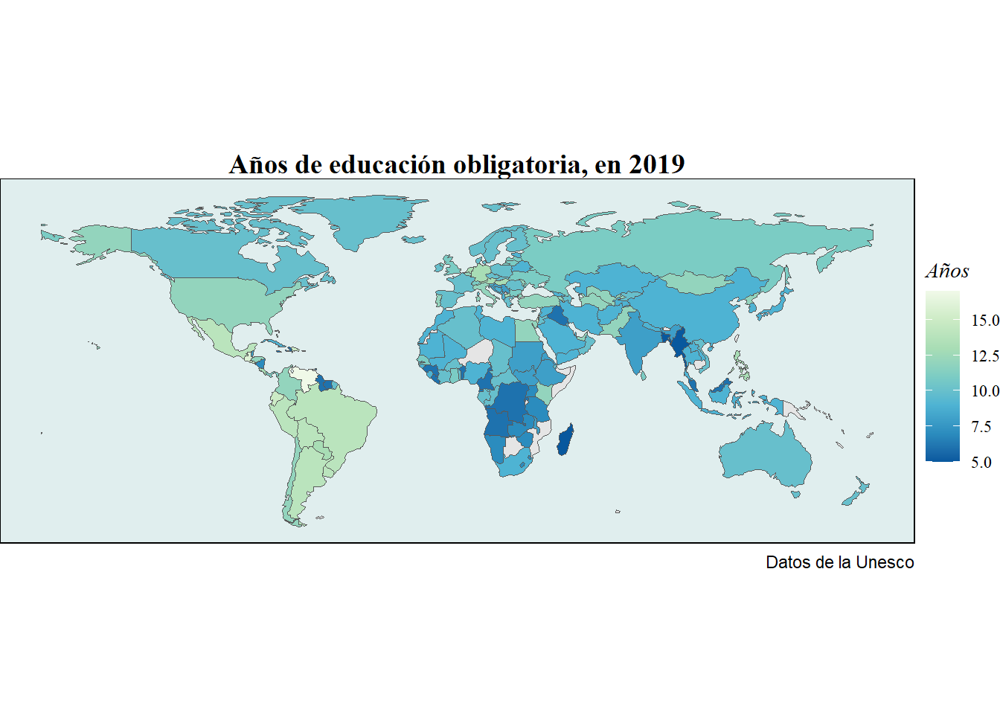
Por todo eso, uno de los gastos más importantes de un país es el gasto en educación, el cual forma parte del gasto público del gobierno, que se financia con el presupuestos de un país.
En el caso de España, el gasto que se realiza se reparte de esta manera entre los distintos servicios que realiza el estado español.
Código
eurostat_p <- read.csv("datos/presupuesto.csv")
presupuesto <- eurostat_p %>%
select(-c(LAST.UPDATE, freq, unit, sector, na_item, OBS_FLAG, DATAFLOW)) %>%
rename(Año = TIME_PERIOD, Valor = OBS_VALUE, Partida = cofog99, Pais = geo) %>%
filter(Pais == "ES") %>%
mutate(Partida_presupuesto = forcats::fct_recode(Partida,
"Servicios públicos generales" = "GF01",
"Defensa" = "GF02",
"Orden público y seguridad" = "GF03",
"Asuntos económicos" = "GF04",
"Protección del medio ambiente" = "GF05",
"Vivienda y servicios comunitarios" = "GF06",
"Salud" = "GF07",
"Ocio y cultura" = "GF08",
"Educación" = "GF09",
"Protección social" = "GF10")) %>%
select(-c(Partida, Pais)) %>%
filter(Año == "2020")
ii <- treemap(presupuesto,
index="Partida_presupuesto",
vSize="Valor",
type="index",
border.col=c("grey"),
palette="Dark2",
title="Gasto del gobierno general por función en 2020",
fontsize.labels = 8) 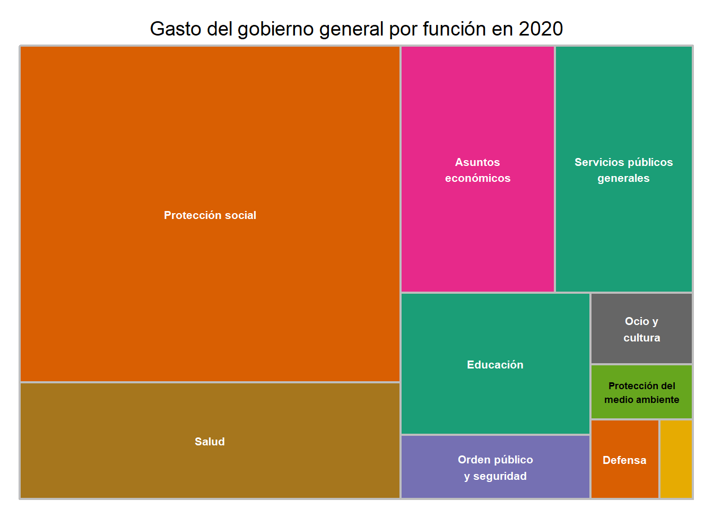
Se puede ver que en el 2020, la educación fue el quinto servicio en el que más dinero invirtió el estado español, alrededor del 8,8%, situado por detrás de otros servicios como la protección social, la sanidad, los servicios públicos generales y los asuntos económicos.
Cabe resaltar también que no es tan importante cuánto dinero va destinado a un lugar, como puede ser sanidad, educación o defensa, si ese gasto no se usa correctamente o directamente no acaba en el sitio que le corresponde, lo que puede hacer que la gente pierda la confianza en el gobierno.
En este mapa, vamos a observar cuál es el grado de confianza que tienen los ciudadanos en relación al gasto que realiza su gobierno con el dinero público.
Código
confianza_gobierno <- read.csv("datos/gobierno_aprobacion.csv")
educ_6 <- confianza_gobierno %>%
rename(region = LOCATION, Año = TIME, Valor = Value) %>%
select(region, Año, Valor)
mapdata <- map_data("world")
mapdata_2 <- mapdata %>%
mutate(Pais = countrycode::countrycode(sourcevar = region, origin = "country.name",
destination = "iso3c", warn = FALSE))
data(World)
world <- World ; rm(World)
world1 <- world %>%
select(region = iso_a3, geometry) %>%
filter(!region == "ATA")
mapa4 <- left_join(world1, educ_6, by = "region")%>%
drop_na()
gg <- ggplot() +
geom_sf(data = world1) +
geom_sf(data = mapa4, aes(fill = Valor)) +
labs(
title = "Año: {current_frame}") + scale_fill_distiller(name="Confianza", palette = "YlGn", trans = "reverse") + theme_void() +
transition_manual(Año) + theme(panel.grid.major = element_line(linetype = "blank"),
plot.title = element_text(family = "serif"),
legend.title = element_text(size = 12,
family = "mono"), panel.background = element_rect(fill = "lightcyan"),legend.position = "right") + theme(plot.title = element_text(size = 15,
hjust = 0.5), legend.position = "bottom",
legend.direction = "horizontal") + labs(title = "Año {current_frame}") + theme(panel.background = element_rect(fill = "lightblue")) + theme(plot.title = element_text(size = 20,
colour = "gray32", hjust = 0.05))
animate(gg, width = 500, height = 500)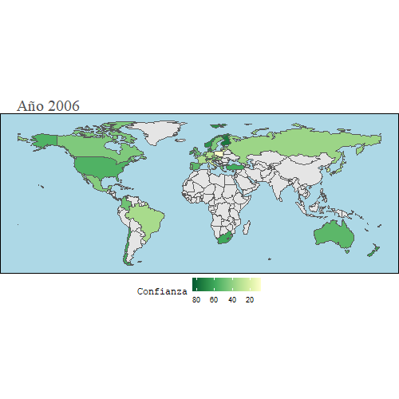
Como se puede observar, la mayoría de países no tienen la confianza de sus ciudadanos en cuanto al uso que hacen del dinero público, sobre todo en la época en la que se agravó la crisis del 2008, durante los años 2010-2014, debido principalmente a las altas tasas de paro que había en la mayoría de países y las medidas poco efectivas que tomaban.
Se puede observar también que en España la confianza fue cayendo paulatinamente hasta el 2018, que es más o menos cuando España empezó a recuperarse de los efectos de la crisis.
Para acabar con este apartado, vamos a aclarar unos aspectos del trabajo.
Solo se va a tener en cuenta unas pocas variables que conforman el gasto en educación, ya que hay alrededor de 15 partidas pero solo se comentarán el gasto en las distintas etapas educativas: educación infantil, educación primaria y secundaria y educación terciaria.
Se va a analizar el gasto en educación pública no el gasto realizado en educación privada.
Contexto español
Centrándonos en España, el gasto que se realiza en educación tiene dos problemas, no es suficiente y aparte es poco eficiente, en comparación con otros países de la Unión Europea y del G7.
Las consecuencias de la insuficiencia y poca efectividad del gasto se puede observar en las altas tasas de desempleo de población cualificada y no cualificada, la poca población con estudios terciarios o en los resultados obtenidos en las pruebas PISA.
España es el sexto país de la UE con el menor gasto público para Educaciónhttps://t.co/4IZeF29u6F pic.twitter.com/AUxQfNwFQs
— elEconomista.es (@elEconomistaes) November 6, 2018
Solamente el 25% del gasto público total se destina a sanidad y educación.
— Jano García (@janogarcia_) January 29, 2021
El 75% restante está destinado, en gran medida, a mantener este Estado deficiente. Como las pensiones que son una estafa piramidal y un sistema quebrado.
La revolución en España será liberal o no será.
La tasa de paro de la poblacion Qualificada en España duplica a la de la media Europeahttps://t.co/pgOCt4CKcN
— TrabajarenEuropa (@TrabajarEuropa) June 16, 2019
Mediante este gráfico, podemos ver cómo ha ido evolucionando el gasto que se hace en educación en función del PIB.
Código
educacion_gasto_PIB <- read.csv("datos/Datos_educacion_PST.csv")
educ_1 <- educacion_gasto_PIB %>% rename(Pais = LOCATION, Año = TIME, Valor = Value, Educacion = SUBJECT) %>%
select(-c(FREQUENCY, Flag.Codes, INDICATOR, MEASURE)) %>%
filter(Año >= 2008) %>%
drop_na() %>%
filter(Pais %in% c("GBR","CAN","JPN","ESP","USA","ITA","DEU","FRA","PRT","GRC")) %>%
pivot_wider(names_from = Educacion, values_from = Valor) %>%
mutate(Gasto_total = TRY + PRY_NTRY) %>%
drop_na() %>%
select(-c(TRY, PRY_NTRY)) %>%
mutate(iso2 = countrycode(sourcevar = Pais,
origin = "iso3c",
destination = "iso2c", warn = FALSE))
aa <- educ_1 %>%
ggplot(aes(x= Año, y= Gasto_total)) +
labs(title = "Evolución % gasto en educación/PIB",
x = "Año",
y = "% Gasto/PIB",
color = "Países") + geom_flag(aes(image = iso2)) +
geom_line(aes(color= Pais), size= 1.5) +
scale_color_manual(values= c("coral1", "tan4", "yellow", "blue", "red", "orange", "green3", "darkmagenta","green4","cyan1")) +
theme(plot.title = element_text(size = 20, face = "bold",
hjust = 0.5),
axis.title.x = element_text(size = 13, hjust = 1,
vjust = 0),
axis.title.y = element_text(size = 13, hjust = 1, vjust = 1),
legend.title = element_text(face = "bold")) +
transition_reveal(Año) +
view_follow() + theme_bw() + theme(panel.grid.major = element_line(colour = "gray87",
linetype = "dashed"), panel.background = element_rect(fill = "aliceblue")) + theme(panel.grid.minor = element_line(linetype = "blank"),
axis.text = element_text(family = "serif",
size = 9, colour = "gray17"))
animate(aa, width = 500, height = 500)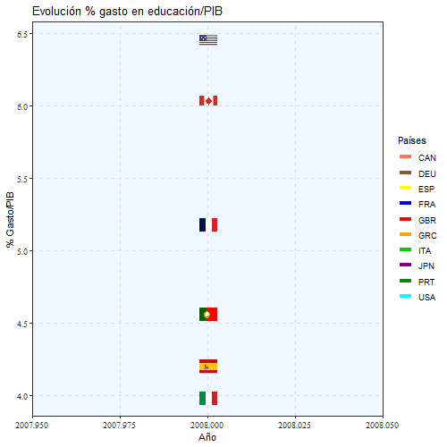
Vemos que España sigue la misma tendencia y ronda el 4,5% gasto/PIB e incluso está por encima de países como Italia, Alemania o Japón, sin embargo, después las tasas de desempleo, formación y notas en las pruebas PISA son superiores a los de España.
Incluso Portugal está por encima en algunos periodos de Francia y España, pero al igual que España, ese gasto luego no tiene los resultados adecuados.
Desde un contexto europeo, también se puede comprobar que España está atrás en cuanto a inversión en educación se refiere respecto a los países europeos.
Código
gasto_total_educ <- read.csv("datos/gasto_total_y_publico.csv")
educ_4 <- gasto_total_educ %>%
rename(Pais = LOCATION, Año = TIME, Valor = Value) %>%
select(-c(INDICATOR, MEASURE, FREQUENCY, Flag.Codes)) %>%
filter(SUBJECT == "EDU") %>%
filter(Año >= "1995", Año < "2021") %>%
select(-SUBJECT) %>%
rename("region" = Pais)
world_map <- ne_countries(scale = 50, returnclass = 'sf')
paises_europeos <- c("Austria","Belgium","Bulgaria","Croatia","Cyprus",
"Czech Rep.","Denmark","Estonia","Finland","France",
"Germany","Greece","Hungary","Ireland","Italy","Latvia",
"Lithuania","Luxembourg","Malta","Netherlands","Poland",
"Portugal","Romania","Slovakia","Slovenia","Spain",
"Sweden","United Kingdom","Switzerland","Serbia","Norway")
mapa_europa <- world_map %>%
filter(name %in% paises_europeos) %>%
select(c(name, iso_a3))
bbox_europe <- st_bbox(c(xmin = -10, ymin = 20, xmax = 50, ymax = 80), crs = st_crs(mapa_europa))
european_union_map_cropped <- st_crop(mapa_europa, bbox_europe)
df <- tibble(country = paises_europeos,
some_value = runif(length(paises_europeos)))
map <- european_union_map_cropped %>%
inner_join(educ_4, by = c("iso_a3" = "region"))
dd <- ggplot(data = map) +
geom_sf(mapping = aes(fill = Valor)) +
scale_fill_distiller(name="%PIB", palette = "YlOrRd", trans = "reverse") +
labs(x = "",
y = "") +
theme(plot.title.position = "plot") + transition_manual(Año) + labs(
title = "Año: {current_frame}",
x = NULL, y = NULL) + theme_void() +
transition_manual(Año) + theme(panel.grid.major = element_line(linetype = "blank"),
plot.title = element_text(family = "serif"),
legend.title = element_text(size = 12,
family = "mono"), panel.background = element_rect(fill = "aliceblue"),legend.position = "right") + theme(panel.background = element_rect(fill = "linen")) + theme(legend.position = "right", legend.direction = "horizontal")
animate(dd, width = 500, height = 500)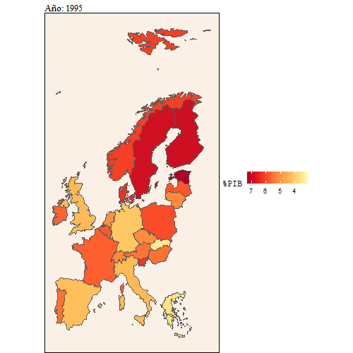
Aquí también se puede ver con más detalle la evolución que ha habido del gasto en educación sobre el PIB comparado con el gasto en educación sobre el gasto público.
Código
gasto_total_educacion_PIB <- read.csv("datos/gasto_total_y_publico.csv")
educ_3 <- gasto_total_educacion_PIB %>%
rename(Pais = LOCATION, Año = TIME, Valor = Value, Educacion = SUBJECT) %>%
select(-c(INDICATOR, MEASURE, FREQUENCY, Flag.Codes)) %>%
filter(Pais %in% c("GBR","CAN","JPN","ESP","USA","ITA","DEU","FRA","PRT","GRC")) %>%
filter(Año >= "1995", Año < "2021") %>%
pivot_wider(names_from = Educacion, values_from = Valor) %>%
mutate(iso2 = countrycode(sourcevar = Pais,
origin = "iso3c",
destination = "iso2c", warn = FALSE)) %>%
mutate(Prop_gasto_educ = ((EDU * 100)/TOT)) #Se refiere al % del gasto publico que se usa en educacion
cc <- ggplot(educ_3,
aes(x = Prop_gasto_educ , y= EDU)) +
labs(x ="% Gasto educación/Gasto público", y = "% Gasto educación/PIB") +
theme_solarized() +
transition_time(Año) +
labs(
subtitle = "Año: {frame_time}") +
geom_flag(aes(image = iso2)) + theme(panel.grid.major = element_line(colour = "gray59",
linetype = "dashed"), panel.grid.minor = element_line(colour = "gray59",
linetype = "dashed"), plot.title = element_text(family = "mono",
size = 14), panel.background = element_rect(fill = "aliceblue"),
plot.background = element_rect(fill = NA)) + theme(plot.subtitle = element_text(family = "serif",
size = 15)) + theme(axis.title = element_text(family = "mono"))
animate(cc, width = 600, height = 500, fps = 2,
duration = 15, rewind = FALSE) 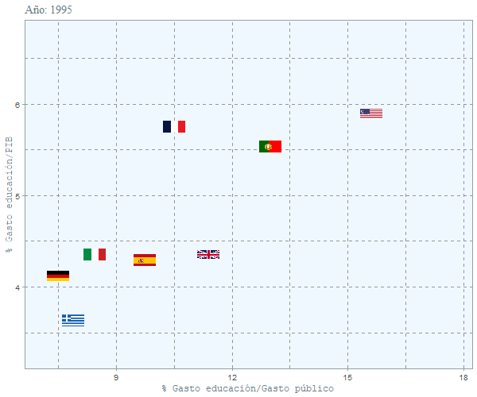
Se puede ver que el peso que tiene la educación en el presupuesto español no ha variado mucho y se ha mantenido constante en el tiempo
Entonces, si aunque invirtamos más no significa obtener mejores resultados, que hay que hacer para poder lograrlos?
División del gasto en educación
Un motivo que podría explicar los malos resultados que obtiene España podría ser que el gasto en educación no esta bien repartido entre las distintas etapas educativas o incluso se aplique un sistema educativo obsoleto y poco eficaz.
Por eso vamos a desglosar el gasto en educación en tres ramas: educación infantil, educación primaria y secundaria y educación terciaria y ponerlas en una gráfica.
Código
educacion_segmento <- read.csv("datos/Datos_educacion_completo.csv")
educ_2 <- educacion_segmento %>%
rename(Pais = LOCATION, Año = TIME, Valor = Value, Etapa_educativa = SUBJECT) %>%
select(-c(FREQUENCY, Flag.Codes, INDICATOR, MEASURE)) %>%
filter(Año >= 2008) %>%
drop_na() %>%
filter(Pais %in% c("GBR","CAN","JPN","ESP","USA","ITA","DEU","FRA","PRT","GRC")) %>%
mutate(Educacion = forcats::fct_recode(Etapa_educativa,
"Educación infantil" = "EARLYCHILDEDU",
"Primaria y Secundaria" = "PRY_NTRY",
"Educación Terciaria" = "TRY")) %>%
select(-Etapa_educativa)
bb <- educ_2 %>%
ggplot(aes(x= Año, y= Valor)) +
labs(title = "Evolución % gasto en educación/PIB",
x = "Año",
y = "Gasto",
color = "Países") +
geom_point(aes(color= Pais), size= 1.75) +
geom_line(aes(color= Pais), size= 1) + scale_color_manual(values= c("coral1", "tan4", "yellow", "blue", "red", "orange", "green3", "darkmagenta","green4","cyan1")) +
theme_minimal() + facet_wrap(
vars(Educacion), nrow = 1, ncol = 3,scales = "free") + theme(axis.line = element_line(size = 0.6,
linetype = "solid"), axis.ticks = element_line(colour = "gray14",
linetype = "dotdash"), panel.grid.major = element_line(colour = "ivory3",
size = 0.4, linetype = "dotted"), panel.grid.minor = element_line(linetype = "blank"),
axis.title = element_text(family = "serif"),
axis.text = element_text(face = "italic",
colour = "gray24"), plot.title = element_text(family = "serif",
size = 15, hjust = 0.5), legend.text = element_text(size = 7,
family = "serif"), legend.title = element_text(size = 11,
face = "bold", family = "serif"),
panel.background = element_rect(fill = "cornsilk1",
linetype = "solid"), plot.background = element_rect(fill = "blanchedalmond",
colour = NA, linetype = "solid"),
legend.key = element_rect(fill = NA),
legend.background = element_rect(fill = NA)) +labs(title = "Evolución del gasto en educación sobre el PIB",
x = "Años", y = "% Gasto educación/PIB",
caption = "Datos de la OECD") + theme(plot.subtitle = element_text(size = 3)) + theme(axis.text = element_text(size = 7,
hjust = 0.1)) + scale_x_continuous(
breaks = seq(2008, 2019, 1),
limits = c(2008, 2019)) + theme(axis.text = element_text(size = 5)) + labs(x = NULL) + labs(y = NULL) + theme(plot.subtitle = element_text(size = 7)) + theme(plot.caption = element_text(size = 6)) + theme(plot.caption = element_text(hjust = 1.075))
bb 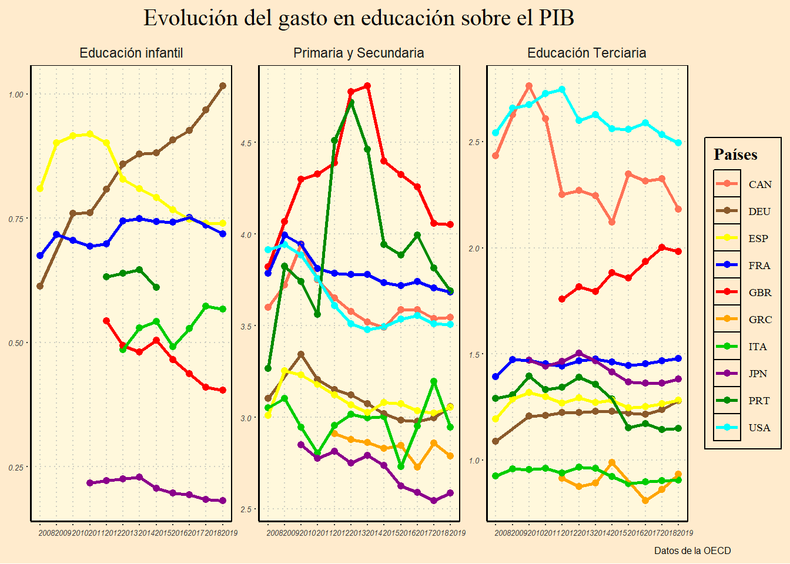
Si observamos detenidamente el gráfico, se ve que la inversión que realizan en educación terciaria o superior, países como Estados Unidos, Reino Unido o Japón, es decir, países muy ricos y desarrollados es superior a la inversión que realiza España, Portugal o Grecia.
Este detalle es importante, porque la educación superior pretende formar individuos que sean capaces de impulsar el desarrollo económico y social de un país.
También se ve que el gasto en la etapa de secundaria y primaria, es superior también, lo que podría traducirse en mejores resultados en las pruebas PISA, aunque no necesariamente como veremos más adelante.
Pruebas PISA

Como se mencionó anteriormente, las pruebas PISA, son un Programa para la Evaluación Internacional de Alumnos de la OCDE (PISA, por sus siglas en inglés), que tiene como objetivo evaluar que puntos los alumnos cercanos al final de la educación obligatoria han adquirido algunos de los conocimientos y habilidades necesarios para la participación plena en la sociedad del saber.
PISA saca a relucir aquellos países que han alcanzado un buen rendimiento y, al mismo, tiempo, un reparto equitativo de oportunidades de aprendizaje, ayudando asi a establecer metas ambiciosas para otros países.
Estas pruebas son realizadas cada tres años. Examinan el rendimiento de alumnos de 15 años en áreas temáticas claves como son lectura, matemáticas y ciencias.
Analisis de datos
En la prueba de matemáticas, el quinto mejor es Corea del sur, con una media de 539,4 y el mas cercano de los vecinos de España es Francia, con 495,2 y España con 483,2 por debajo de Portugal. Siendo el mejor Singapur con 564 de media, la diferencia es increíble, segundo Hong Kong y tercero Macao.
Código
#españa y sus vecinos junto a los mejores 5 mejores de mates
z<-full_join(VECINOS, mejores_mates)
z <- z %>%
mutate(media_mate = forcats::as_factor(media_mates), media_lecture = forcats::as_factor(media_lectura), media_cience = forcats::as_factor(media_ciencias)) %>% mutate(iso2 = countrycode(sourcevar = LOCATION,
origin = "iso3c",
destination = "iso2c", warn = FALSE))
z %>%
arrange(media_mates) %>% # First sort by val. This sort the dataframe but NOT the factor levels
mutate(media_matef=factor( media_mates, levels=media_mate)) %>% # This trick update the factor levels
ggplot( aes(x=LOCATION, y=media_matef))+
geom_flag( aes(image = iso2))+
geom_segment(aes(xend=LOCATION, yend=0))+
coord_flip() +labs(title='Los 5 mejores en matemáticas',
subtitle='junto a España y sus vecinos',
caption='Fuente: OCDE',
x= "Paises", y='Notas')+theme_bw()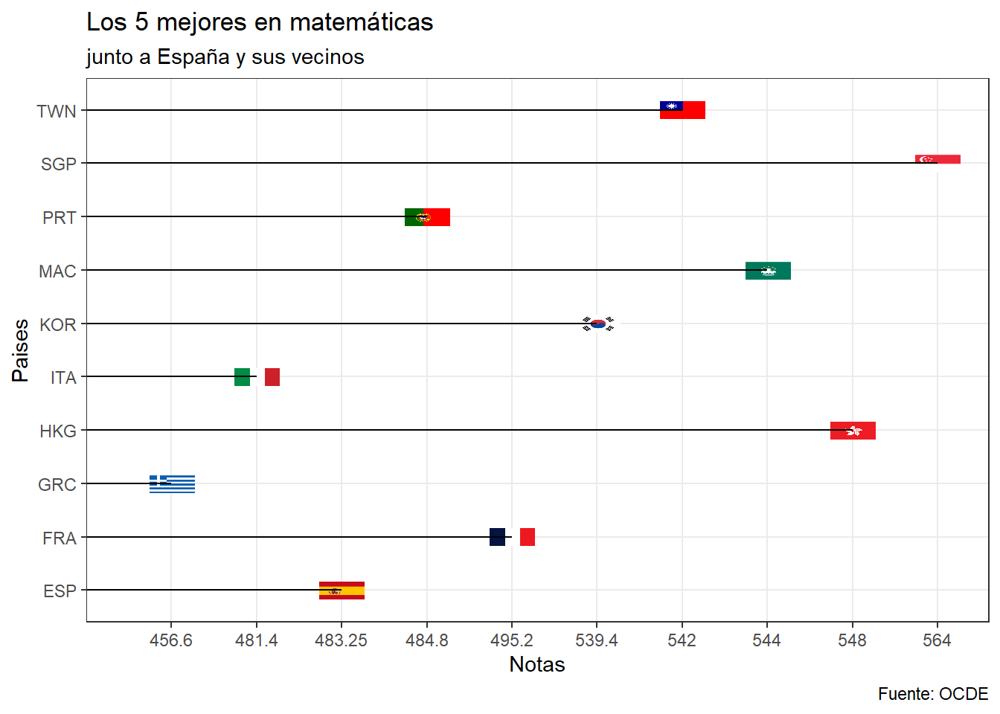
En la prueba de Lectura, el quinto mejor es Canadá con 524,2 luego observamos a Francia con 496,2 que esta vez la distancia es mucho menor, luego tenemos a Portugal que supera a España por casi 7 puntos y les siguen Italia y Grecia. El mejor en esta prueba vuelve a ser Singapur con 535, segundo Corea y tercero Finlandia.
Código
#españa y sus vecinos junto a los mejores 5 mejores de lectura
za<-full_join(VECINOS, mejores_lectura)
za <-za %>%
mutate( media_lecture = forcats::as_factor(media_lectura)) %>% mutate(iso2 = countrycode(sourcevar = LOCATION,
origin = "iso3c",
destination = "iso2c", warn = FALSE))
za %>%
arrange(media_lecture) %>% # First sort by val. This sort the dataframe but NOT the factor levels
mutate(media_lecturef=factor( media_lectura, levels=media_lecture)) %>% # This trick update the factor levels
ggplot( aes(x=LOCATION, y=media_lecturef))+
geom_flag( aes(image = iso2))+
geom_segment(aes(xend=LOCATION, yend=0))+
coord_flip() +
theme_bw() +labs(title='Los 5 mejores en Lectura',
subtitle='junto a España y sus vecinos',
caption='Fuente: OCDE',
x= "Paises", y='Notas')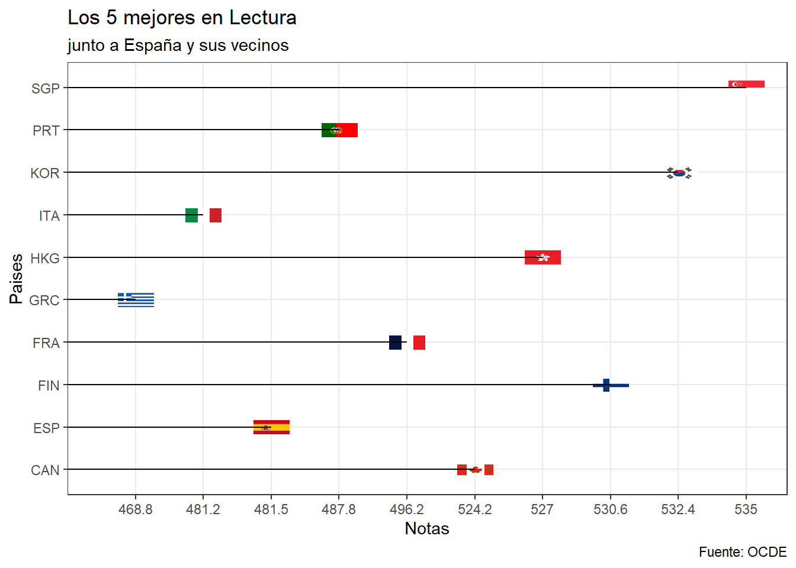
En la prueba de Ciencias, el quinto mejor es Taiwan, con una media de 532, luego observamos a Francia con 496 y España con 491,25 superando a Portugal, Italia y a Grecia. El mejor en esta prueba vuelve a ser Singapur con 556, segundo Finlandia y tercero Japón.
Código
# España y sus vecinos junto a los mejores 5 mejores de ciencia
zb<-full_join(VECINOS, mejores_ciencias)
zb <-zb %>%
mutate( media_ciencie = forcats::as_factor(media_ciencias)) %>% mutate(iso2 = countrycode(sourcevar = LOCATION,
origin = "iso3c",
destination = "iso2c", warn = FALSE))
zb %>%
arrange(media_ciencias) %>% # First sort by val. This sort the dataframe but NOT the factor levels
mutate(media_ciencief=factor( media_ciencias, levels=media_ciencie)) %>% # This trick update the factor levels
ggplot( aes(x=LOCATION, y=media_ciencief))+
geom_flag( aes(image = iso2))+
geom_segment(aes(xend=LOCATION, yend=0))+
coord_flip() +
theme_bw() +labs(title='Los 5 mejores en Ciencias',
subtitle='junto a España y sus vecinos',
caption='Fuente: OCDE',
x= "Paises", y='Notas')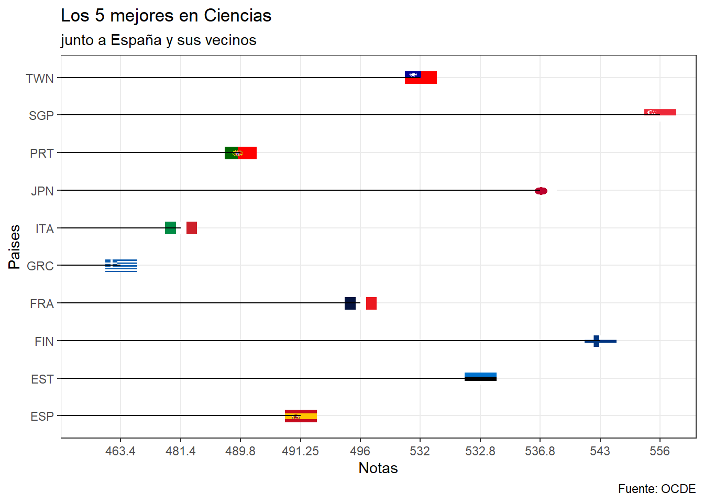
Como podemos observar, España y sus vecinos están muy lejos de estar entre los mejores de cada prueba, pudiendo destacar que Francia es superior en todas las pruebas si lo comparamos con España,Grecia, Italia y Portugal.
Código
df_flags <- w %>% #- fips
mutate(iso2 = countrycode(sourcevar = LOCATION,
origin = "iso3c",
destination = "iso2c", warn = FALSE)) %>%
mutate(iso2 = tolower(iso2)) %>%
# glue:glue() : pega texto con "código", con objetos de R: los objetos tienen que ir entre corchetes {}
mutate(flag_URL = glue::glue('https://hatscripts.github.io/circle-flags/flags/{iso2}.svg'), .before=LOCATION)
tt_flags <- df_flags%>% select(-6) %>% gt()
tt_flags <- tt_flags %>% tab_header(title = md("**España junto a sus vecinos y los 9 Paises con mejores medias en las pruebas Pisa**"),
subtitle = md("Datos de *Hombres y Mujeres*"))
tt_flags <- tt_flags %>% cols_label(media_mates = md("**Matemáticas**"), LOCATION= md("**Paises**"), media_ciencias = md("**Ciencias**"), media_lectura = md("**Lectura**"),flag_URL = md("**Banderas**"))
tt_flags <- tt_flags %>%
fmt_number(columns = c(media_mates, media_ciencias, media_lectura),
decimals =2,
sep_mark = ".",
dec_mark = ",")
tabla<- tt_flags %>%
gt::text_transform(locations = cells_body(columns = c(flag_URL)),
fn = function(x){gt::web_image(x, height = 30)})
tabla<- tabla %>% opt_stylize(style = 1, color = "red") #- red
tabla| España junto a sus vecinos y los 9 Paises con mejores medias en las pruebas Pisa | ||||
| Datos de Hombres y Mujeres | ||||
| Banderas | Paises | Matemáticas | Ciencias | Lectura |
|---|---|---|---|---|
 |
ESP | 483,25 | 491,25 | 481,50 |
 |
FRA | 495,20 | 496,00 | 496,20 |
 |
GRC | 456,60 | 463,40 | 468,80 |
 |
ITA | 481,40 | 481,40 | 481,20 |
 |
PRT | 484,80 | 489,80 | 487,80 |
 |
SGP | 564,00 | 556,00 | 535,00 |
 |
HKG | 548,00 | 523,00 | 527,00 |
 |
MAC | 544,00 | 529,00 | 509,00 |
 |
TWN | 542,00 | 532,00 | 497,00 |
 |
KOR | 539,40 | 526,60 | 532,40 |
 |
FIN | 525,20 | 543,00 | 530,60 |
 |
JPN | 529,40 | 536,80 | 515,20 |
 |
EST | 518,20 | 532,80 | 512,00 |
 |
CAN | 520,00 | 526,80 | 524,20 |
Podemos observar que existe una notable diferencia entre los países asiáticos y los europeos, el único país europeo que podemos apreciar que se encuentra entre los mejores es Finlandia. España está muy por debajo y entre los cinco 4 vecinos que hemos escogido podemos ver que en dos de las tres pruebas, España se encuentra peor que Francia y que Portugal.
Evolución de las notas de las pruebas PISA
Código
# Grafica final
datos_gt_movil_long <- datos_gt_movil %>% tidyr::pivot_longer(cols = 4:6,
names_to = "pruebas",
values_to = "notas" )
datos_gt_movil_long <- datos_gt_movil_long %>%
mutate(prueba = case_when(
pruebas=="mates" ~ "Matemáticas",
pruebas=="ciencia" ~ "Ciencias" ,
pruebas=="Lectura" ~ "Lectura"
)) %>% select(-pruebas)
grafico2<- ggplot( data= datos_gt_movil_long, aes(x=TIME, y=notas)) + geom_line( aes(color= LOCATION) , size=1) +
theme_ipsum() + geom_flag(aes(image = iso2))+
labs(title='Evolución de las notas de la prueba PISA',
subtitle='España y sus vecinos',
caption='Proceedings of the National Academy of Sciences, 104 (3):1051-1056, 2007',
x='Año', y='Notas')+
transition_reveal(TIME)+
theme(plot.title=element_text(family='Anton', size=20),
plot.subtitle=element_text(family='Anton'),
axis.title.x = element_text(family='Anton', face='bold', hjust=1),
axis.title.y = element_text(family='Anton', face='bold', hjust=1))+
view_follow() + theme(panel.grid.major = element_line(colour = "gray87",
linetype = "dashed"), panel.background = element_rect(fill = "darkolivegreen"), legend.position='none') + facet_wrap(vars(prueba), nrow = 1, ncol= 3)
animate(grafico2, width=1000, height=500, fps=10)
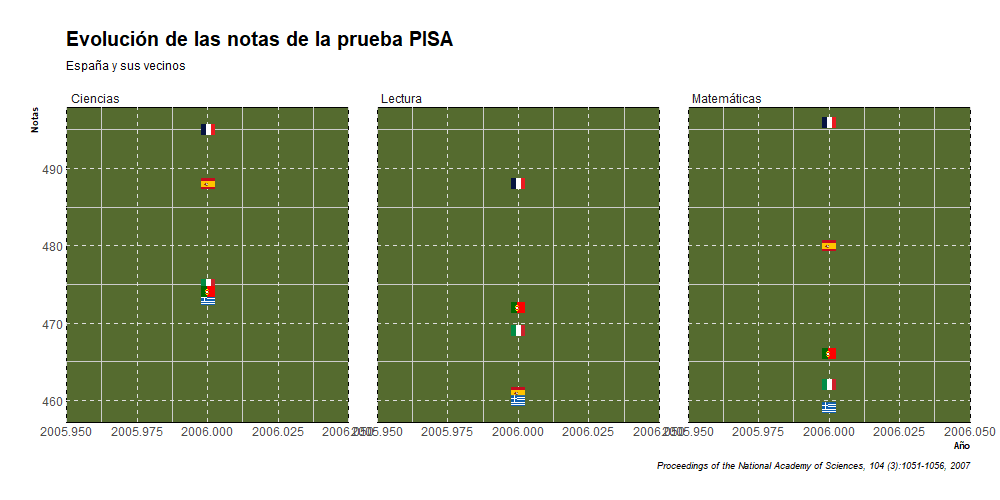
En la prueba de Ciencias, observamos como en 2006 España era el segundo mejor de los 5, siendo superado solo por Francia. Es bastante curioso el increíble crecimiento que experimenta Portugal e Italia en los primeros años de la serie. En 2012 Italia obtiene su mayor nota en cuanto a ciencias, con 494. posicionándose como tercera, por detrás de Portugal y Francia. Portugal en 2015 es cuando obtiene su nota más alta, 501, pero posteriormente tanto Portugal como Italia experimentan un descenso notable. Por otra parte, tenemos a Grecia, país que desde que la serie empieza no hace nada más que caer, pasando de 473 en 2006 a tener 452 en 2018.
En la prueba de Matemáticas, se aprecia algo similar a la prueba de ciencias, Francia parte como primera, Portugal e Italia experimentan un incremento bastante palpable, Portugal pasando de 466 en 2006 a 492 en 2018 e Italia pasando de 462 en 2006 a 487 en 2018. España se mantiene prácticamente plana y Grecia experimenta una pequeña mejora y luego se hunde.
En la prueba de lectura, observamos que los primeros años de la serie todos los países observan un incremento en sus notas hasta 2009, cuando curiosamente se empieza a sufrir la gran recesión. Pero es bastante raro que España y Portugal a diferencia de sus vecinos no vieran sus notan descender sino al contrario. España pasó de 461 en 2006 a 496 en 2015. Portugal pasó de 472 en 2006 a 492 en 2015, llegando a obtener 498 en 2015. Francia pasó de 488 en 2006 a 493 en 2018 llegando a su máximo en 2012 con 505. Italia pasó de 469 en 2006 a 476 en 2018 y Grecia pasó de 460 en 2006 a 457 en 2018, llegando a tener 483 en 2009. Por tanto, viéndolo de manera general, el único país que está peor que en 2006 es Grecia.
De manera general podemos ver que la mayoría de países experimenta un incremento en sus notas en los primeros años de la serie, luego se observa un descenso generalizado aproximadamente en 2012 y luego se observa una reversión de esa tendencia y los países vuelve a recuperar en parte lo perdido, lo que nos llevaría a la siguiente parte de este trabajo, donde buscaremos responder a la siguiente pregunta:
¿Tiene alguna relación las notas que los países sacan en las pruebas PISA con el gasto que los países destinan a educación?
Modelo de Regresión
Código
datos_educacion.csv <- read.csv("./datos/Datos_educacion_completo.csv")
datos1<- datos_educacion.csv %>%
rename(Pais = LOCATION, Año = TIME, Valor = Value, Educacion = SUBJECT) %>%
select(-c(INDICATOR, MEASURE, FREQUENCY, Flag.Codes)) %>%
filter(Año >= 2006) %>%
drop_na() %>%
mutate(Educacion = forcats::fct_recode(Educacion,
"Educación infantil" = "EARLYCHILDEDU",
"Primaria y Secundaria" = "PRY_NTRY",
"Educación Terciaria" = "TRY"))
pisa_ciencias<- read.csv("./datos/pisa_ciencias.csv")
pisa_mates <- read.csv("./datos/pisa_mates.csv")
pisa_lectura <- read.csv("./datos/pisa_lectura.csv")
df <- pisa_mates %>% select(1,3,6,7)
df1<-pisa_ciencias %>% select(1,3,6,7)
df1 <- df1 %>% rename(ciencia=Value)
df <- df %>% rename (mates=Value)
pisa_lectura <- pisa_lectura %>% select(LOCATION,TIME, Value)
pisa_lectura <- pisa_lectura %>% rename(Lectura=Value)
pisa<- inner_join(df,df1)
pisa <- inner_join(pisa, pisa_lectura)
pisa <- pisa %>% select(-c(SUBJECT))
df_modelo <- left_join(pisa, datos1, by = c("LOCATION" = "Pais","TIME" = "Año" ))
df_modelo <- df_modelo %>% filter(Educacion == "Primaria y Secundaria") %>% drop_na()Para ver la relación entre las notas de los estudiantes en las pruebas PISA con el gasto que los países destinan a la educación. Hemos calculado el modelo de regresión lineal y las correlaciones entre estos dos factores.
El modelo de regresión lineal nos sirve para describir una variable de respuesta continua como una función de una o varias variables predictoras. Y la correlación nos indica la fuerza y la dirección de una relación lineal y proporcionalidad entre dos variables estadísticas.
A continuación, en la siguiente tabla podemos observar esta tabla con las regresiones lineales de las notas de las pruebas de Matemáticas, Ciencias y Lectura con el gasto de educación.
Código
my_modelmates <- lm(mates ~ Valor, data = df_modelo)
my_modelmates
#>
#> Call:
#> lm(formula = mates ~ Valor, data = df_modelo)
#>
#> Coefficients:
#> (Intercept) Valor
#> 493.580 -1.054
my_modelciencia <- lm(ciencia ~ Valor, data = df_modelo)
my_modelciencia
#>
#> Call:
#> lm(formula = ciencia ~ Valor, data = df_modelo)
#>
#> Coefficients:
#> (Intercept) Valor
#> 492.42 0.52
my_modelLectura <- lm(Lectura ~ Valor, data = df_modelo)
my_modelLectura
#>
#> Call:
#> lm(formula = Lectura ~ Valor, data = df_modelo)
#>
#> Coefficients:
#> (Intercept) Valor
#> 479.220 3.371
#- O también podemos estimarlos en una lista.
my_models <- list()
my_models[['W: OLS 1']] <- lm( mates ~ Valor, df_modelo)
my_models[['W: OLS 2']] <- lm( ciencia ~ Valor , df_modelo)
my_models[['W: OLS 3']] <- lm( Lectura ~ Valor , df_modelo)
###Estimación de los modelos -----------
sjPlot::tab_model(my_models, show.ci = FALSE, title = "Modelo de regresión lineal entre el gasto de educación y las notas PISA")| mates | ciencia | Lectura | ||||
|---|---|---|---|---|---|---|
| Predictors | Estimates | p | Estimates | p | Estimates | p |
| (Intercept) | 493.58 | <0.001 | 492.42 | <0.001 | 479.22 | <0.001 |
| Valor | -1.05 | 0.469 | 0.52 | 0.709 | 3.37 | 0.014 |
| Observations | 1154 | 1154 | 1154 | |||
| R2 / R2 adjusted | 0.000 / -0.000 | 0.000 / -0.001 | 0.005 / 0.004 | |||
Por tanto, podemos determinar viendo los coeficientes que cuando el gasto de educación aumenta por una unidad:
Las notas de matemáticas bajan por 1.06 unidades
Las notas de ciencias suben por 0.49 unidades
Las notas de lectura suben por 3.36 unidades
También observando el R cuadrado, que nos indica sí podemos explicar o predecir una variable haciendo uso de la otra. Por tanto, podemos determinar que no existe ajuste o es casi nulo entre las notas PISA y el gasto en educación.
En cuanto al valor de P, normalmente los estudios de R suelen realizarse bajo un nivel de confianza del 95%. Así que podemos concluir que el gasto de educación no es válido para predecir la variable de las notas de las pruebas PISA.
También podemos observar la regresión con estas gráficas.
Aquí se puede ver la regresión de otra manera.
Código
plot1<- ggplot(my_modelmates, aes(x=mates, y= Valor)) +
geom_point() +
geom_smooth(method='lm', formula=y~x, se=FALSE, col='dodgerblue1') +
theme_light()
plot2 <- ggplot(my_modelciencia, aes(x=ciencia, y= Valor)) +
geom_point() +
geom_smooth(method='lm', formula=y~x, se=FALSE, col='dodgerblue1') +
theme_light()
plot3<- ggplot(my_modelLectura, aes(x=Lectura, y= Valor)) +
geom_point() +
geom_smooth(method='lm', formula=y~x, se=FALSE, col='dodgerblue1') +
theme_light()
grid.arrange(plot1, plot2, plot3)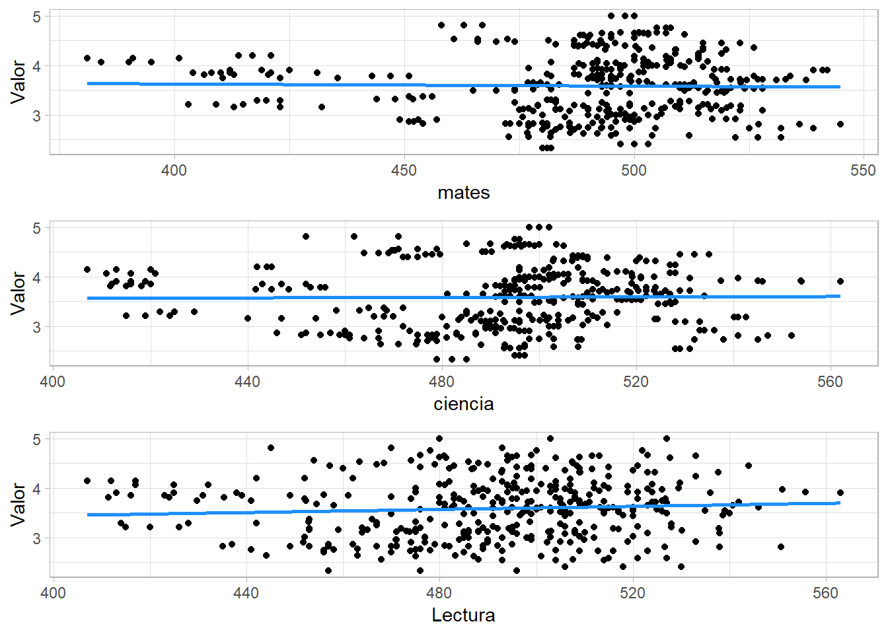
En cuanto a la correlación, podemos observar que entre el gasto de educación y las notas de las pruebas PISA, de ciencias y lectura tienen una correlación positiva débil. Y entre el gasto de educación y las notas PISA de matemáticas tiene una correlación negativa débil. Donde podemos verlo, en la siguiente gráfica.
Código
##Correlacion--------------------
cor(df_modelo$ciencia, df_modelo$Valor)
#> [1] 0.01100711
cor(df_modelo$mates, df_modelo$Valor)
#> [1] -0.02132917
cor(df_modelo$Lectura, df_modelo$Valor)
#> [1] 0.07220233
#cor(data)
modelo_interaccion <- lm(formula = Valor ~ mates + ciencia + Lectura, data = df_modelo)
summary(modelo_interaccion)
#>
#> Call:
#> lm(formula = Valor ~ mates + ciencia + Lectura, data = df_modelo)
#>
#> Residuals:
#> Min 1Q Median 3Q Max
#> -1.30725 -0.50285 0.02466 0.40728 1.49769
#>
#> Coefficients:
#> Estimate Std. Error t value Pr(>|t|)
#> (Intercept) 3.137027 0.322471 9.728 < 2e-16 ***
#> mates -0.004694 0.001523 -3.083 0.0021 **
#> ciencia 0.001321 0.001753 0.754 0.4512
#> Lectura 0.004271 0.001078 3.962 7.88e-05 ***
#> ---
#> Signif. codes: 0 '***' 0.001 '**' 0.01 '*' 0.05 '.' 0.1 ' ' 1
#>
#> Residual standard error: 0.6077 on 1150 degrees of freedom
#> Multiple R-squared: 0.02003, Adjusted R-squared: 0.01747
#> F-statistic: 7.834 on 3 and 1150 DF, p-value: 3.538e-05
#Ajustamos datos para que solo haya variables numéricas
data <- df_modelo %>% select(-c(LOCATION, TIME, Educacion)) # Variables numéricas
data2009 <- df_modelo %>% filter(TIME== "2009") #2009 CRISIS
data2018 <- df_modelo %>% filter(TIME=="2018") #2018
###Gráfica correlación -----
pairs(data)
#Gráfica correlación colores
corrplot.mixed(cor(data),
lower = "number",
upper = "circle",
tl.col = "black")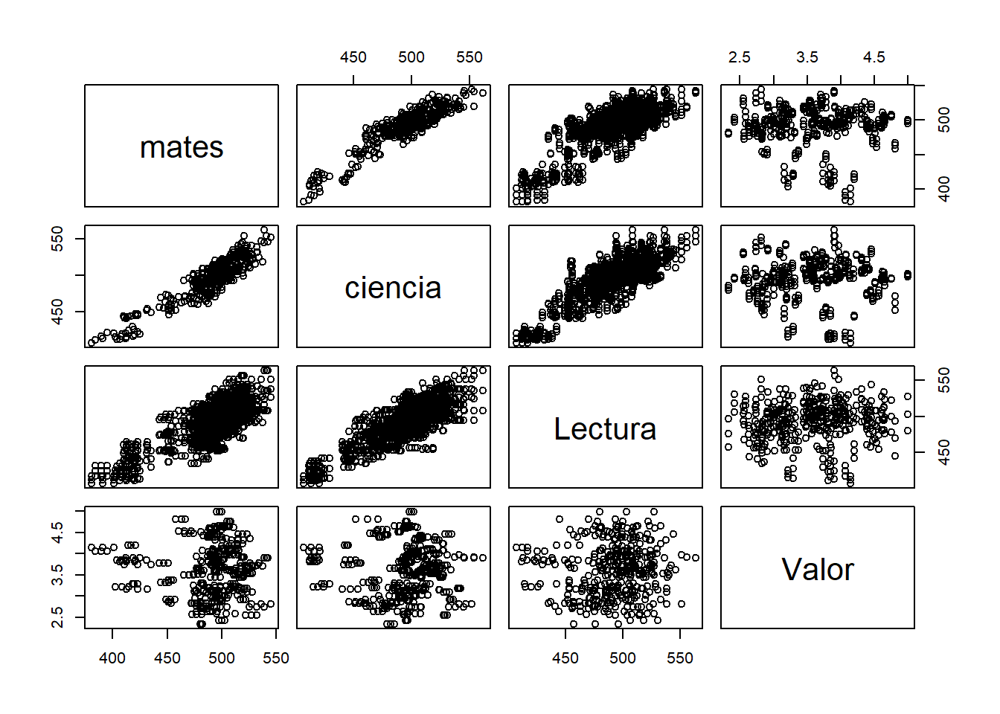
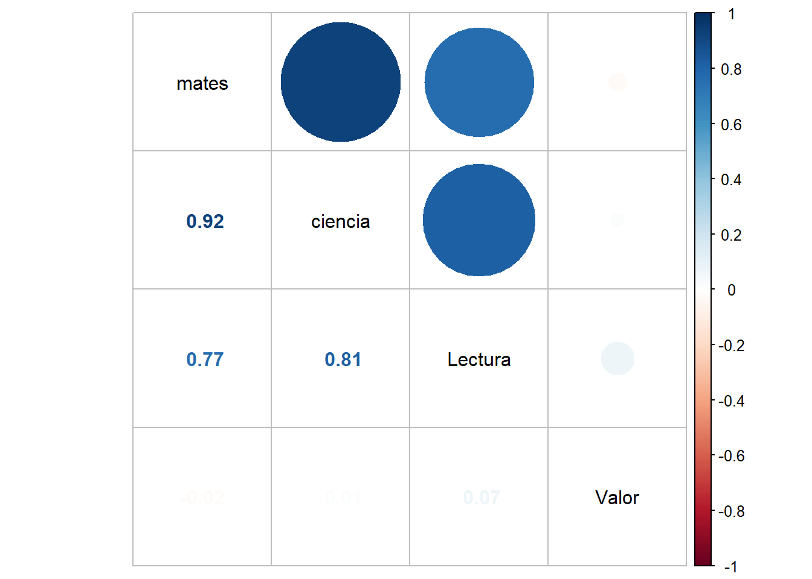
En último lugar, ¿Existe la misma relación entre las notas y el gasto público entre el primer año obtenido de datos y el último? ¿La crisis del 2008 afectó a las notas de los estudiantes?
Por ello, hemos obtenido estas gráficas comparativas entre estos años (2009 y 2018)
Y podemos observar que la tendencia de 2009 a 2018 es más negativa y dispersada. Por tanto, la relación entre estos años no es la misma.
En último lugar, concluimos que la relación entre el gasto y las notas obtenidas en el test PISA es muy débil. Por ello, la crisis de 2008 pudo afectar a las notas de los estudiantes, pero el gasto no es un factor determinante.
Conclusiones
La educación es un gasto principal en cada economía por su impacto tanto económico como social. La eficiencia del gasto en educación depende del uso correcto de los fondos por parte de los gobiernos. Por tanto, el grado de confianza de los ciudadanos en el Estado, se reduce.
En el caso de España, el gasto en educación es insuficiente y poco eficiente ya que no tiene tanto impacto económicamente como se refleja en las tasas de desempleo. En comparativa con otros países de la OECD, España pertenece al grupo donde el efecto del gasto es menor dado que también su inversión es menor. En cuanto al rendimiento de los estudiantes, que son el factor principal del gasto en educación, evaluamos las pruebas PISA. Donde se divide en tres ramas, Matemáticas, Lectura y Ciencias.
En las pruebas podemos observar que España y sus vecinos como Grecia, Italia o Portugal están alejados de formar parte de los mejores de cada prueba. Donde resalta Francia que, en diferencia a los países anteriormente mencionados, su valor es superior a estos. Cabe destacar la gran disparidad entre los países asiáticos y europeos donde los países asiáticos se encuentran entre los mejores.
Al observar la evolución de las notas de las pruebas PISA, se experimenta un crecimiento aproximado en forma de U. Primero ascienden las notas, desciende aproximadamente por el 2012 y luego vuelve a ascender. ¿Esta evolución puede ser causada por las fluctuaciones del gasto en educación?
Para contestar a esta pregunta, efectuamos el modelo de regresión estudiando su regresión lineal y la correlación entre las variables. Tras observar variables como r cuadrado, el coeficiente o el valor de P, concluimos que relación entre el gasto de educación y las notas de las pruebas PISA es mínimo, no válido para predicciones y que el ajuste es casi nulo o no existe.
En conclusión, aunque la relación entre el gasto de educación y las notas de las pruebas PISA sea débil, es remarcable que en ambas variables su rendimiento es bajo en comparativa con otros países de la OECD. Por tanto, España y sus vecinos, deberían incrementar su gasto, pero de manera más eficiente y observar las diferencias en comparativa con Asia o Finlandia y aprender de ellas en cuanto a los conocimientos de los estudiantes evaluados por las pruebas PISA.